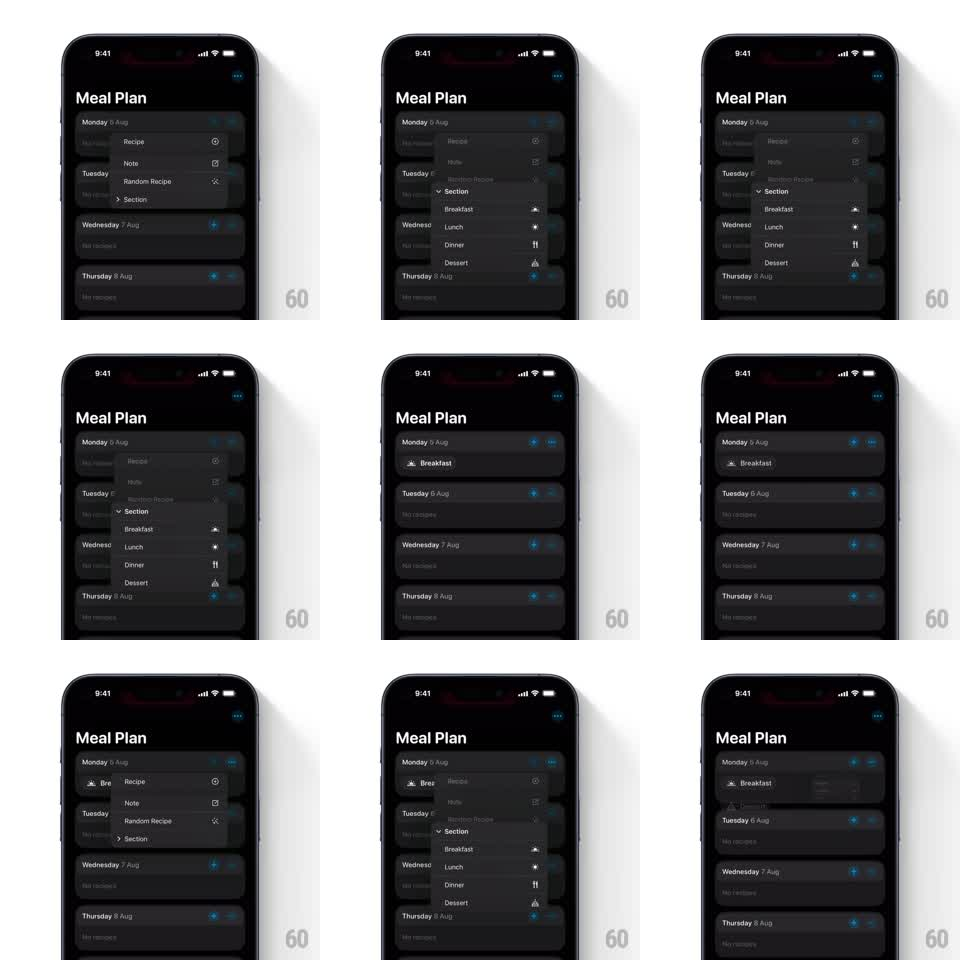

Media
Frame-by-frame

Rebuild this interaction 1:1: Crouton's meal-type picker - a dark iOS context menu whose Section submenu expands inline, and choosing a meal type animates a new row into the day card with a smooth layout shift.

Rebuild this interaction 1:1: Crouton's meal-type picker - a dark iOS context menu whose Section submenu expands inline, and choosing a meal type animates a new row into the day card with a smooth layout shift. ## Integration Integration: stack-agnostic spec - springs given as stiffness/damping, timed motions as duration + curve; map every value to your framework and animation library of choice. ## Scene Dark Meal Plan screen: a vertical stack of day cards (Monday 5 Aug, Tuesday 6 Aug, ...), each with quick-add buttons. Long-press/tap a day opens a floating dark context menu: Recipe, Note, Random Recipe, and Section with a submenu chevron. Section expands inline to list meal types: Breakfast, Lunch, Dinner, Dessert, each with its glyph. On selection the menu closes and a new row (e.g. "Breakfast" with its icon) appears inside the day card. ## Motion spec Pattern: inline-expanding context menu with animated list insertion. - The context menu scales in from its anchor point (scale 0.85 to 1.0 + fade, 200ms, ease-out), origin pinned to the touch point. - Tapping Section: the submenu items expand inline within the same menu - rows below slide down to make room (~250ms, ease-out), the chevron rotates 90deg, and meal-type rows fade-slide in staggered (40ms apart). - Selection: the chosen row flashes highlight (~120ms), the menu scales down and fades out (150ms, collapsing toward the anchor). - The new meal row inserts into the day card: existing card content slides down on a spring (stiffness ~300, damping ~26) while the row fades in and unclips from zero height (~300ms) - a layout animation, not a popover. ## Calibration - The inline submenu is the detail to nail: no second panel, no push - the same menu grows. - Row insertion must move real content; a fade-in without the layout shift reads as a label appearing, not an item being added. ## Reduced motion Menu fades in/out; rows appear without height animation. ## Don't miss - Each meal type keeps its distinct glyph (sun for Breakfast, etc.) in both the menu and the inserted row - icon continuity is how the user tracks what happened. - The menu stays dark-translucent over the dimmed list; it never goes opaque.